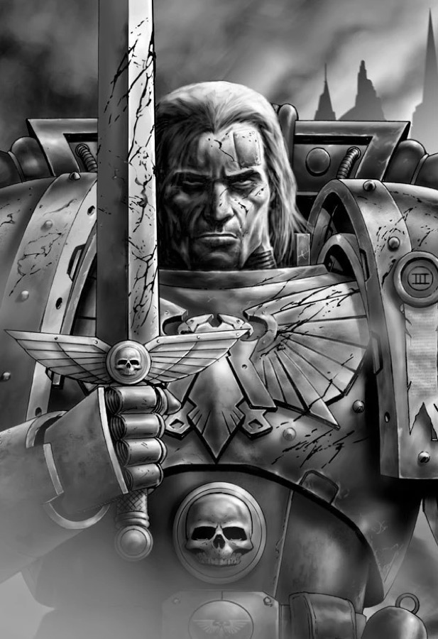

Saul Tarvitz
| Saul Tarvitz | |
|---|---|
| Captain of the Emperor's Children | |
 Saul Tarvitz, captain of the Emperor's Children, c. 005.M31 Artwork © Games Workshop | |
| Captain of the 10th Company, Emperor's Children | |
| Tenure | Great Crusade – c. 005.M31 |
| Primarch | Fulgrim (the Legion's primarch, who turned traitor) |
| Predecessor | Not recorded |
| Successor | None; the Loyalist command on Isstvan III died with him |
| Legion | Emperor's Children (III Legion) |
| Allegiance | Loyalist |
| Died | Presumed c. 005.M31, in the final bombardment of the Choral City, Isstvan III |
| Honour-brother | Nathaniel Garro of the Death Guard |
| Wargear | Artificer armour, Bolt pistol, Charnabal broadsword, Refractor field |
| Known for | The warning that saved two thirds of the Loyalist first wave from the virus bombardment of Isstvan III |
Saul Tarvitz, called the Honour of His Legion in Imperial histories, was a captain of the Emperor's Children and the commander of its 10th Company during the closing years of the Great Crusade. He is remembered as the officer who learned of Horus's treason before it was loosed, and who carried the warning to the surface of Isstvan III in 005.M31 at the cost of his own life.[1]
Tarvitz was a line officer by choice. He neither sought nor expected promotion to the Legion's higher ranks, and he held that the Emperor's Children were meant to pursue purity of purpose rather than superiority over other Legions. The same quality made him an uncommon figure in a Legion that was already drifting toward the excesses of its Primarch, Fulgrim.[2]
Career
[edit]Service in the Great Crusade
[edit]Imperial records give Tarvitz a long list of victories but few honours, and they disagree on his company. Galaxy in Flames and The Flight of the Eisenstein treat him as the first captain of the Legion, while Fulgrim gives the 1st Company to Julius Kaesoron and places Tarvitz at the head of the 10th. This article follows the later account.[a][2]
His closest friendship in the Legion was with Lucius, captain of the 13th Company, a gifted swordsman who resented the attention Tarvitz earned. Outside the Legion his closest tie was an oath of honour-brotherhood with Nathaniel Garro of the Death Guard, sworn during the Preaixor Campaign. The two marked the bond by cutting a small eagle into each other's vambraces.[3]
In the 203rd year of the Great Crusade (estimated c. 003.M31), a company of the Emperor's Children under Lord Commander Eidolon went to the aid of the Blood Angels on the world later named Murder, a prison planet of the Megarachnids. The landing parties were scattered by artificial storms. Tarvitz's party found and destroyed one of the xenos weather-engines, which cleared the sky and let the Luna Wolves land in strength. There he met Tarik Torgaddon of the Luna Wolves and formed the first of several friendships with that Legion's officers.[1][b]
Isstvan III
[edit]When the Death Guard, World Eaters, Sons of Horus and Emperor's Children gathered at the Isstvan System, Tarvitz was chosen to lead the spearhead of the first assault. Suspicious of the change in his Legion, he asked the Venerable Dreadnought Rylanor to take his place and stayed aboard Eidolon's ship, the Andronicus. There he learned that the fleet was loading virus bombs for a bombardment of the world below while the Legions' loyal warriors were still fighting on its surface.[3]
Tarvitz took a Thunderhawk and fled for the planet, pursued by interceptors. He called the frigate Eisenstein, commanded by his honour-brother Garro, and swore on his life that he spoke the truth. Garro ordered the frigate to fire but altered the targeting, so that the lead interceptor was destroyed and the others scattered in its wake, and Tarvitz escaped into the atmosphere.[3]
On the ground Tarvitz warned the loyalist captains. When Horus ordered the bombardment, nearly two thirds of the first wave had reached sealed bunkers and tunnels beneath the Siren Hold. The loyalist World Eaters, furthest from cover, suffered the worst. Angron's counter-landing then fell on the survivors and cut down the loyalist World Eaters under Brother-Captain Ehrlen, though Tarvitz escaped.[1][4]
Over the two months that followed, Tarvitz, Garviel Loken, Torgaddon and the other loyalist captains turned a planned massacre into a house-to-house defence of the Choral City. Tarvitz held the Precentor's Palace against repeated attacks by Eidolon. Rough counts put loyalist dead near 20,000 and traitor dead at about twice that number. As the fighting dragged on he took command of the loyalists, with Loken and Torgaddon deferring to him. Solomon Demeter, who had been badly hurt in the firestorm, refused to take the command back.[5]
Lucius, jealous of his friend, offered Eidolon the loyalist defences in return for a place among the traitors. He killed thirty loyalist legionaries to open the lines, killed the dying Demeter, and challenged Tarvitz to a duel. Tarvitz won the fight, but Lucius fled to the traitors. Tarvitz then ambushed Eidolon's exposed flank and spoiled his attempt to seize the Palace.[2]
Death
[edit]Tarvitz's fate is unrecorded. It is generally held that he died when the traitor Titans of the Legio Mortis and the Legio Audax levelled the walls of the Palace and the Legions followed, or in the last orbital bombardment of the Choral City. Another account says Rylanor withdrew into tunnels beneath the Palace after Tarvitz spoke of something there that needed guarding, but nothing confirms it. Rylanor survived the bombardment.[6]
Imperial historians preserve one line attributed to Tarvitz in the last hours: "Our names may be forgotten, and our bones crumble to dust, but our deaths will echo through the millennia to come."[1]
Wargear
[edit]Tarvitz wore Artificer armour and carried a Charnabal broadsword, a Bolt pistol, a modified Bolter used as a sniper rifle, frag and krak grenades and a Refractor field.[1]
Timeline
[edit]| Date | Event |
|---|---|
| Great Crusade | Oath of honour-brotherhood with Nathaniel Garro in the Preaixor Campaign |
| c. 003.M31 | Murder campaign: Tarvitz destroys a xenos weather-engine and meets Tarik Torgaddon[c] |
| 005.M31 | Tarvitz flees the Andronicus and warns the loyalists of Isstvan III |
| 005.M31 | Tarvitz leads the loyalist defence of the Choral City; presumed killed in the final bombardment |
See also
[edit]Notes
[edit]References
[edit]- ^ a b c d e Bligh, Alan. The Horus Heresy - Book One: Betrayal (Forge World Series). Forge World, pp. 48, 261.
- ^ a b c McNeill, Graham (2007). Fulgrim (novel). Black Library.
- ^ a b c Swallow, James (2007). The Flight of the Eisenstein (novel). Black Library.
- ^ Counter, Ben (2006). Galaxy in Flames (novel). Black Library.
- ^ Abnett, Dan (2006). Horus Rising (novel). Black Library. Part Two, chs. 2, 4, 6.
- ^ McNeill, Graham. "The Ancient Awaits", in Sons of the Emperor (anthology). Black Library. pp. 133-149.